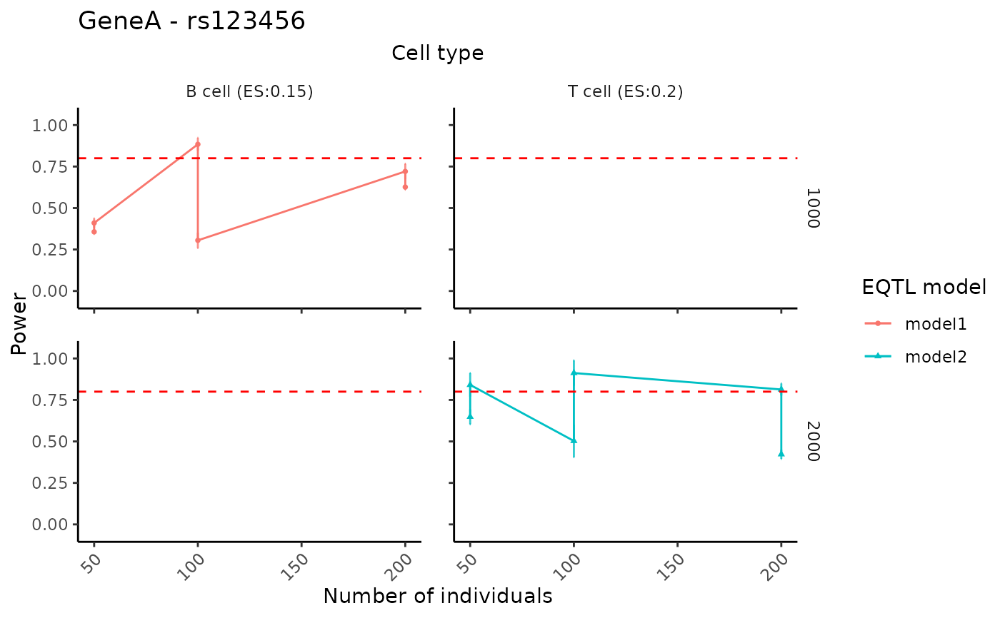

Create faceted power curves summarizing how power changes across different study design settings (e.g., numbers of individuals, numbers of cells per individual, or specified effect sizes), stratified by cell type and eQTL model.
Usage
visualizePowerCurve(
power_result,
celltype_vector,
x_axis = "nindiv",
x_facet = "celltype",
y_facet = "ncell",
col_group = "method",
geneid,
snpid
)Arguments
- power_result
A data frame containing the power analysis results under different design parameter settings. It is expected to include columns such as
celltype,nindiv,ncell,method, and summary statistics such asmean,sd,power,slope, and/orspecifiedES, depending on the chosenx_axis,x_facet,y_facet, andcol_grouparguments.- celltype_vector
A character vector specifying the cell types to be included in the visualization. When
x_axis != "specifiedES", curves for all selected cell types are shown. Whenx_axis == "specifiedES", only the first cell type incelltype_vectoris used.- x_axis
A character string specifying which variable in
power_resultis mapped to the x-axis. Supported values are"nindiv"(number of individuals),"ncell"(number of cells per individual), and"specifiedES"(specified effect sizes). The default is"nindiv".- x_facet
A character string specifying the variable used to define columns in the facet grid. Typical choices are
"celltype","nindiv", or"ncell", and only specific combinations withx_axisandy_facetare supported (see function code for details). The default is"celltype".- y_facet
A character string specifying the variable used to define rows in the facet grid. Typical choices are
"ncell"or"nindiv", and only specific combinations withx_axisandx_facetare supported. The default is"ncell".- col_group
A character string specifying the variable in
power_resultthat defines the color (and shape) groups for the curves. This is typically the eQTL model or analysis method, and defaults to"method".- geneid
A character string giving the gene identifier to be included in the main plot title.
- snpid
A character string giving the SNP identifier to be included in the main plot title (together with
geneid).
Details
When x_axis != "specifiedES", power is plotted against either the
number of individuals or the number of cells per individual, with facets
arranged by the remaining design variable and cell type. When
x_axis == "specifiedES", power is plotted as a function of specified
effect sizes for a single cell type (the first element of
celltype_vector), with facets arranged by the design parameters.
In all cases, a horizontal dashed line at power = 0.8 is added to indicate
a commonly used target threshold.
Examples
# Example toy data
toy_df <- data.frame(
celltype = rep(c("B cell", "T cell"), each = 6),
nindiv = rep(c(50, 100, 200), times = 4),
ncell = rep(c(1000, 2000), each = 6),
method = rep(c("model1", "model2"), each = 6),
mean = runif(12, 0.3, 1),
sd = runif(12, 0.01, 0.1),
slope = c(rep(0.15, 6), rep(0.20, 6))
)
# Visualize curves for selected cell types
visualizePowerCurve(
power_result = toy_df,
celltype_vector = c("B cell","T cell"),
x_axis = "nindiv",
x_facet = "celltype",
y_facet = "ncell",
col_group = "method",
geneid = "GeneA",
snpid = "rs123456"
)
#> Scale for y is already present.
#> Adding another scale for y, which will replace the existing scale.
